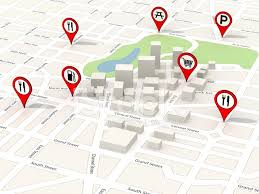

William Cheung
IoT wearable User Authentication with Biometrics
With the increasing use of smart technology more sensitive information is accessible through smart wearables. Some of their wearables such as watches and glasses make implementing log-in requests more difficult due to small interfaces. People are also often overwhelmed by the number of passwords they use. As a result, we present a continuous implicit authentication scheme that ensures safety while making life easier.
To enable the system to authenticate users in both the stationary and non-stationary case various combinations of heart rate, gait (movement patterns), and breathing was used. We initially used more simple machine learning modeling such as Random Forest, Support Vector Machine, K-Nearest Neighbors, and Naive Bayes to train models.
Finally we moved to train deep learning and different types of neural networks from (CNN, RNN, and CRNN) to find accuracies of up to 97.3% ± 0.4%. We implemented these models through TensorFlow. The main application ran on the phone with Java while the communication was facilitated to the watch wearable through our server using JavaScript.
“Continuous Authentication of Wearable Device Users from Heart Rate, Gait, and Breathing Data” IEEE RAS/EMBS International Conference on Biomedical Robotics & Biomechatronics (BioRob)
“Context-Dependent Implicit Authentication for Wearable Device User” IEEE International Symposium on Personal, Indoor and Mobile Radio Communications (PIMRC)
“Securing IoT Wearables Using On-Phone DNN Models Running on Breathing Sounds from Microphones” [Submition in Progress]
“Bag of On-Phone NN models to Secure IoT Objects Using Wearable and Smartphone Data Fusion” [Submition in Progress]
Point of Interest tracking through IoT wearables
TThere are two types of point of interest (POI) tendencies we want to learn. One that creates an understanding of crowd patterns (global model) and one that predicts individual movement (individual models). Using commonly found biometrics on wrist wearables was used along with time data. We are able to predict POI location with the global model at 66.3% ± 7.0% accuracy and 95.3% ± 2.5% accuracy with the individual model.
“Time- and Activity-Driven Biometric Patterns for Places of Importance (POI) Prediction” [Submition in Progress]
Hotel Review Sentiment Analysis

Currently over three quaters of hotel reviews are controled by four companies: Booking.com, TripAdvisor, Google,and Hotels.com. However, using machine learning we can try to use crowd data such as social media posts to rate hotels. Using data from Hotels.com we developed CNN and GRU models using Bag of Words (BOW) and Term Frequency - Inverse Document Frequency (TF-IDF) features to classify comments as supportive, neutral, or negative reviews.
Related Documentation for More Details
Trading Bot: A technical and Reddit Hybrid Approch
Work in progress.
Spark and Big Data Analytics:
NYC Parking Violation Prediction
There is not supposed to be any bias in issuing car tickets but we were very curious about the trends. Car type, time of day, area, etc there are many factors we looked into as per who was most likely to get tickets.
NBA Player Effectiveness Analytics
Using analytics in part of NBA strategy is a common practice. With data on NBA players, we compute the defender players’ most fear, as well as the optimal shot situation (shot-clock time, position, and nearest defender location) for various players.


Related Documentation for More Details
Spark and Machine Learning with Big Data:
Toxic Comment Classification
With the rise in online anonymity there is a growth of cyberbullying as well. It’s hard to track conversations to manually detect bullying and having reporting options can still be overwhelmed by sheer volume. We attempt to train a linear regressor to detect Toxic users automatically.
Heart Disease Prediction
Machine learning has also assisted in medical advancements, most commonly in diagnoses. Preventative care being as cost-efficient and important as it greatly benefits when people can quickly get access. Here we try to detect the threat of heart disease given lifestyle and personal factors. With logistic regression, we can achieve 86% accuracy in detection.
Income Prediction
It’s important to see how people's background can affect their financial stability in life. Although we would like everyone to have the same opportunities your background may affect how much you earn. We predicted if individuals with given background would be earning more or less than fifty thousand dollars at 85% accuracy.
Related Documentation for More Details